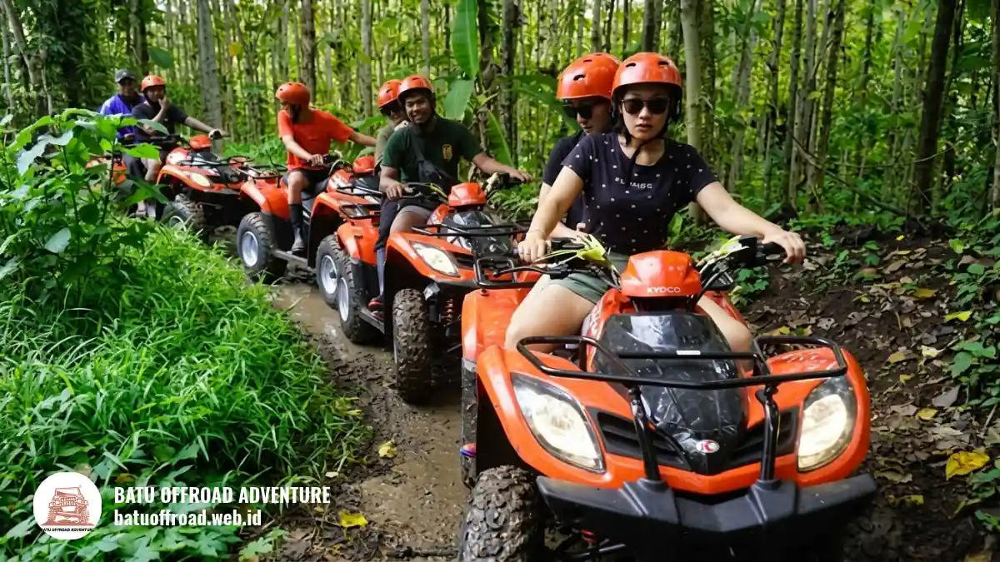

ATV Payung Pinus Batu, Aktivitas Outdoor Seru Bersama Keluarga
Offroad ATV Payung Pinus Batu adalah aktivitas berkendara ATV menyusuri jalur hutan pinus dan tanah berlumpur di Kota Batu, cocok untuk keluarga dan rombongan.
- ATV Payung Pinus Batu menggabungkan suasana hutan pinus yang sejuk dengan sensasi berkendara di jalur tanah dan lumpur.
- Paket ATV dari Batu Offroad mencakup unit ATV, instruktur, safety gear, air mineral, snack, dan dokumentasi perjalanan.
- Batu Offroad Adventure mencatat lebih dari 180 event dan menyediakan lebih dari 3 rute offroad (situs resmi, November 2026).
- Reservasi disarankan 1-2 minggu sebelum kedatangan, terutama untuk akhir pekan dan hari libur nasional.
- Ingin langsung merencanakan kegiatan? Tim Batu Offroad siap membantu memilih kegiatan yang pas untuk rombongan Anda. Hubungi WhatsApp +62 812-3398-9707 untuk cek jadwal dan ketersediaan armada.
Apa Itu Offroad ATV Payung Pinus di Batu?
Offroad ATV Payung Pinus adalah wisata petualangan mengendarai ATV di kawasan hutan pinus Kota Batu, Jawa Timur, dengan pendampingan instruktur dan perlengkapan keselamatan.
ATV (All Terrain Vehicle) adalah kendaraan roda empat yang dirancang untuk medan tidak rata seperti tanah, batu kecil, dan lumpur. Di kawasan pinus Batu, jalurnya melewati deretan pohon pinus, tanjakan ringan, dan genangan lumpur yang membuat pengalaman terasa lebih seru dibanding wisata santai biasa.
Aktivitas ini disediakan oleh Batu Offroad Adventure, penyedia jasa offroad dan outbound yang berbasis di Temas, Kecamatan Batu.
Batasannya perlu dipahami sejak awal. ATV bukan kendaraan untuk ngebut tanpa arahan, dan jalur dapat berubah sesuai cuaca. Karena itu, peserta tetap mengikuti briefing keselamatan dan arahan instruktur selama perjalanan.
Mengapa ATV Payung Pinus Cocok untuk Keluarga dan Rombongan?
ATV Payung Pinus cocok untuk keluarga dan rombongan karena rutenya dipandu instruktur, perlengkapan disediakan, dan suasana hutan pinus yang sejuk nyaman dinikmati bersama.
Aktivitas ini menggabungkan unsur rekreasi dan tantangan ringan. Orang tua bisa menikmati udara pegunungan Batu, sementara peserta yang lebih muda mendapat pengalaman baru yang jarang ditemui di kota. Bagi kantor atau komunitas, ATV menjadi sarana kebersamaan yang lebih hidup dibanding rapat di ruangan.
Berikut kelompok yang umumnya cocok mengikuti ATV di Batu:
- Keluarga yang ingin liburan akhir pekan dengan aktivitas luar ruang.
- Instansi dan perusahaan yang menyusun gathering atau family day.
- Sekolah dan kampus yang membutuhkan kegiatan outing berbasis petualangan.
- Komunitas hobi yang ingin pengalaman berbeda dari wisata biasa.
Syarat kondisi fisik dan batas usia peserta dapat bervariasi, jadi sampaikan jumlah dan usia peserta saat konsultasi agar tim dapat menyesuaikan kegiatan.
Bagaimana Cara Kerja Paket ATV dari Awal sampai Selesai?
Paket ATV berjalan dalam tiga tahap: memilih paket dan tanggal, datang ke basecamp sesuai jadwal, lalu mengikuti briefing keselamatan sebelum berkendara bersama instruktur.
Alur reservasi di Batu Offroad dibuat sederhana. Pertama, tentukan paket yang sesuai dengan jumlah peserta. Situs resmi menyebut jumlah peserta minimal 10 orang untuk paket yang tersedia. Kedua, hubungi tim lewat WhatsApp untuk cek ketersediaan armada pada tanggal yang diinginkan. Ketiga, datang ke lokasi sesuai jadwal.
Di lokasi, peserta menerima briefing keselamatan, mengenakan safety gear, lalu dipandu instruktur menyusuri jalur hutan dan lumpur. Setelah rute selesai, peserta dapat beristirahat, menikmati air mineral dan snack, serta mengambil dokumentasi perjalanan.
Pemesanan sebaiknya dilakukan 1-2 minggu sebelum tanggal kunjungan. Pada akhir pekan dan hari libur nasional, ketersediaan armada lebih cepat terisi.

Peserta ATV memakai helm dan safety gear sebelum briefing di Batu Offroad
Apa Saja yang Termasuk dalam Paket ATV Batu Offroad?
Paket ATV Batu Offroad mencakup unit ATV, instruktur dan safety gear, rute menyusuri hutan dan lumpur, air mineral, snack, serta dokumentasi perjalanan.
Penjelasan tiap komponennya:
- Unit ATV: kendaraan yang disiapkan untuk medan tanah dan lumpur.
- Instruktur dan safety gear: pendamping berpengalaman serta perlengkapan pelindung untuk peserta.
- Rute hutan dan lumpur: jalur yang menyusuri area pinus dengan variasi medan.
- Air mineral dan snack: bekal ringan setelah aktivitas.
- Dokumentasi: foto atau video perjalanan sebagai kenang-kenangan.
Rincian akhir paket dapat disesuaikan dengan kebutuhan rombongan. Anda dapat melihat daftar lengkapnya di halaman Paket ATV Batu Offroad atau menanyakannya langsung lewat WhatsApp Batu Offroad.
Faktor Apa yang Perlu Dipertimbangkan Sebelum Booking ATV?
Sebelum booking ATV, pertimbangkan jumlah peserta, usia dan kondisi fisik, tanggal kunjungan, cuaca, serta tujuan kegiatan agar paket yang dipilih benar-benar sesuai.
Hal-hal yang perlu dicek:
- Jumlah peserta: Paket umumnya mensyaratkan minimal 10 orang, sehingga rombongan kecil sebaiknya berkonsultasi dulu.
- Tujuan acara: Untuk rekreasi keluarga, paket ATV saja sudah cukup. Untuk gathering kantor, kombinasi dengan sesi permainan dapat lebih tepat.
- Waktu kunjungan: Musim hujan membuat jalur lebih licin dan berlumpur. Itu bisa menambah keseruan, tetapi peserta perlu pakaian yang siap kotor.
- Kondisi peserta: Beri tahu tim bila ada peserta dengan keterbatasan fisik agar kegiatan disesuaikan.
- Logistik: Pastikan transportasi, jam kedatangan, dan area parkir sudah dipertimbangkan, terutama bila membawa bus.
Apa Perbedaan ATV, Jeep Offroad, dan Paket Kombinasi?
ATV dikendarai sendiri oleh peserta dengan pendampingan instruktur, sedangkan jeep offroad membawa penumpang dengan driver, dan paket kombinasi menambahkan fun games atau aktivitas lain.
| Pilihan | Gaya Aktivitas | Cocok Untuk |
|---|---|---|
| Paket ATV | Peserta mengendarai sendiri dengan instruktur | Pencari sensasi berkendara langsung |
| Offroad jeep + fun games | Duduk di jeep 4x4, ditambah sesi permainan | Gathering kantor atau komunitas |
| Offroad + team building | Jeep ditambah sesi kerja sama tim | Instansi dan sekolah |
Setiap opsi punya batasan. ATV menuntut peserta aktif mengendalikan kendaraan, sedangkan jeep lebih santai bagi yang tidak ingin mengemudi. Jika Anda mencari kegiatan yang lebih ramai untuk rombongan, lihat paket Offroad + Fun Games di Batu Offroad.
Apa Kesalahan Umum Peserta Sebelum dan Saat Naik ATV?
Kesalahan paling umum peserta ATV adalah memakai alas kaki terbuka, mengabaikan briefing keselamatan, tidak membawa baju ganti, dan memesan terlalu mepet dengan tanggal kunjungan.
Daftar kesalahan yang sering muncul:
- Memakai sandal atau sepatu terbuka yang mudah lepas di medan lumpur.
- Tidak memperhatikan briefing sehingga bingung saat jalur menanjak atau licin.
- Membawa barang berharga tanpa pelindung, padahal medan basah dan berlumpur.
- Tidak membawa pakaian ganti untuk setelah kegiatan.
- Memesan mendadak, padahal armada akhir pekan dapat terisi lebih dulu.
Menghindari lima hal ini sudah cukup untuk membuat pengalaman lebih aman dan nyaman.
Bagaimana Tips Agar ATV di Hutan Pinus Lebih Aman dan Seru?
Agar ATV lebih aman dan seru, pakai sepatu tertutup dan pakaian yang boleh kotor, ikuti arahan instruktur, jaga jarak antar unit, dan datang lebih awal untuk briefing.
Tips praktis yang bisa langsung diterapkan:
- Kenakan sepatu tertutup, celana panjang, dan siapkan jaket tipis karena udara Batu cenderung sejuk.
- Bawa pakaian ganti serta kantong plastik untuk menyimpan baju kotor.
- Simpan ponsel dalam wadah anti air atau titipkan di area aman.
- Dengarkan briefing dan patuhi instruksi instruktur sepanjang rute.
- Datang lebih awal supaya ada waktu istirahat dan berfoto sebelum atau sesudah kegiatan.
Untuk informasi tentang pengelolaan wisata di wilayah ini, Anda dapat merujuk situs Pemerintah Kota Batu.
Siapa Saja yang Cocok Datang Berombongan ke Payung Pinus?
Rombongan keluarga, kantor, sekolah, dan komunitas cocok datang ke Payung Pinus karena kegiatan dapat disusun sesuai tujuan acara dan jumlah peserta.
Batu Offroad menyediakan paket kustom untuk sekolah, kampus, maupun event organizer. Untuk kantor, kegiatan dapat dikombinasikan dengan sesi permainan atau team building. Untuk keluarga, fokusnya ada pada pengalaman bersama yang aman dan mudah diikuti.
Lihat pilihan lengkapnya di daftar paket Batu Offroad, lalu kirim tanggal dan jumlah peserta lewat WhatsApp +62 812-3398-9707. Tim akan membantu menyesuaikan kegiatan dengan kebutuhan Anda.
Kesimpulan
- Offroad ATV Payung Pinus Batu cocok untuk keluarga, kantor, sekolah, dan komunitas yang ingin aktivitas outdoor dengan pendampingan instruktur.
- Paket mencakup ATV, safety gear, rute hutan dan lumpur, air mineral, snack, dan dokumentasi.
- Booking 1-2 minggu sebelumnya dan siapkan sepatu tertutup serta baju ganti.
Siap merencanakan kegiatan? Konsultasikan dengan tim Batu Offroad lewat WhatsApp +62 812-3398-9707 agar kegiatan yang dipilih pas untuk rombongan Anda.
FAQ
-
Apakah pemula dan anak-anak bisa ikut ATV Payung Pinus?
Bisa, peserta akan mendapatkan briefing keselamatan dan didampingi instruktur berpengalaman. Untuk anak-anak dapat dibonceng sesuai batas usia dan arahan tim. -
Berapa minimal peserta untuk booking paket ATV?
Paket ATV Batu Offroad umumnya mensyaratkan minimal 10 orang. Namun rombongan dengan jumlah berbeda tetap dapat berkonsultasi via WhatsApp. -
Apa saja yang harus disiapkan peserta sebelum naik ATV?
Gunakan pakaian nyaman dan siap kotor, sepatu tertutup, serta bawa pakaian ganti lengkap setelah selesai melintasi rute hutan dan lumpur.